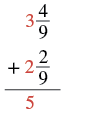
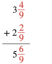
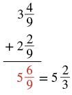

মিশ্র ভগ্নাংশের যোগ ও বিয়োগ
উৎস-অনুগত সম্পূর্ণ মডিউল · A00 / m81290। সম্পূর্ণ বইয়ের অনুবাদ এখনও চলছে। গণিত, প্রশ্ন, উপস্থিত সমাধান, মূল পরিচয়চিহ্ন ও ছবি সংরক্ষিত। সূত্রের শব্দলেবেল ও ছবি-বিবরণ বাংলায় অনূদিত। যেসব প্রশ্নের উত্তর মূল উৎসে নেই, এখানে সেগুলিতে নতুন উত্তর যোগ করা হয়নি। মূল ছবিতে থাকা ভুল/ইংরেজি লেবেলের ক্ষেত্রে বাংলা বিবরণ ও সম্পাদকীয় সতর্কতা পড়ো। স্বাধীন বাংলা ভাষা/শিক্ষক, শিক্ষার্থী ও সহায়ক-প্রযুক্তি পর্যালোচনা বাকি। বাইরের উৎস-লিঙ্কে ইন্টারনেট প্রয়োজন।
এই পাঠের শেষে তুমি পারবে:
- মডেলের সাহায্যে একই হরযুক্ত মিশ্র ভগ্নাংশের যোগ দেখাতে
- একই হরযুক্ত মিশ্র ভগ্নাংশ যোগ করতে
- মডেলের সাহায্যে মিশ্র ভগ্নাংশের বিয়োগ দেখাতে
- একই হরযুক্ত মিশ্র ভগ্নাংশ বিয়োগ করতে
- আলাদা হরযুক্ত মিশ্র ভগ্নাংশ যোগ ও বিয়োগ করতে
একই হরের মিশ্র ভগ্নাংশের যোগের মডেল তৈরি করো
এতক্ষণ আমরা প্রকৃত ও অপ্রকৃত ভগ্নাংশ যোগ ও বিয়োগ করেছি, কিন্তু মিশ্র ভগ্নাংশ নিয়ে তা করিনি। এবার টাকার উদাহরণ দিয়ে মিশ্র ভগ্নাংশের যোগ বুঝব। এখানে মার্কিন ডলার ব্যবহার করা হয়েছে। একটি কোয়ার্টার মুদ্রার মূল্য এক ডলারের এক চতুর্থাংশ, অর্থাৎ ২৫ সেন্ট।
রনের কাছে ডলার ও টি কোয়ার্টার থাকলে তার মোট অর্থ ডলার।
ডনের কাছে ডলার ও টি কোয়ার্টার থাকলে তার মোট অর্থ ডলার।
রন ও ডন তাদের টাকা একত্র করলে কত হবে? তাদের কাছে থাকবে ডলার ও টি কোয়ার্টার। তারা গোটা ডলারগুলি যোগ করে, তারপর কোয়ার্টারগুলি যোগ করে। ফলে হয় ডলার। দুটি কোয়ার্টার মিলে আধ ডলার হয়, তাই মোট অর্থ ডলার ও আধ ডলার, অর্থাৎ ডলার।
তুমি যখন গোটা ডলারগুলি যোগ করলে, তারপর কোয়ার্টারগুলি যোগ করলে, তখন আসলে পূর্ণসংখ্যা অংশগুলি যোগ করেছ, তারপর ভগ্নাংশ অংশগুলি যোগ করেছ।
এই একই উদাহরণের মডেল তৈরি করতে ভগ্নাংশের বৃত্ত ব্যবহার করা যায়। প্রতিটি গোটা বৃত্ত একই মাপের সমগ্র বোঝায়; তার সমান ভাগগুলি ভগ্নাংশ অংশ বোঝায়। এখানে পাশাপাশি লেখা পূর্ণসংখ্যা অংশ ও ভগ্নাংশ অংশ যোগ করে মিশ্র ভগ্নাংশের মান পাওয়া যায়, গুণ করে নয়:
| শুরুতে নাও । | একটি গোটা বৃত্ত এবং অংশের একটি টুকরো |  একটি গোটা রঙ করা বৃত্ত এবং একই মাপের বৃত্তের এক চতুর্থাংশ টুকরো। টুকরোটির ভগ্নাংশে লব ১, হর ৪। |
 মিশ্র ভগ্নাংশ: পূর্ণসংখ্যা অংশ ১ এবং ভগ্নাংশ অংশের লব ১, হর ৪। মান এক যোগ এক চতুর্থাংশ। |
| আরও যোগ করো। | দুটি গোটা বৃত্ত এবং অংশের একটি টুকরো |  যোগচিহ্নের পাশে দুটি গোটা রঙ করা বৃত্ত এবং একই মাপের বৃত্তের এক চতুর্থাংশ টুকরো। টুকরোটির লব ১, হর ৪। নীচে যোগের ফল লেখার রেখা আছে। |
 যোগচিহ্নের পরে মিশ্র ভগ্নাংশ: পূর্ণসংখ্যা অংশ ২, ভগ্নাংশ অংশের লব ১ ও হর ৪। নীচে যোগের ফল লেখার রেখা। |
| যোগফল: | তিনটি গোটা বৃত্ত এবং অংশের দুটি টুকরো |  তিনটি গোটা রঙ করা বৃত্ত এবং একই মাপের বৃত্তের দুটি এক চতুর্থাংশ টুকরো। টুকরো দুটি পাশাপাশি মিলে অর্ধবৃত্ত হয়েছে, মাঝের ভাগের রেখা দেখা যাচ্ছে। |
 পূর্ণসংখ্যা অংশ ৩ এবং ভগ্নাংশ অংশের লব ২, হর ৪-এর মিশ্র ভগ্নাংশ সমান পূর্ণসংখ্যা অংশ ৩ এবং ভগ্নাংশ অংশের লব ১, হর ২-এর মিশ্র ভগ্নাংশ। দুই চতুর্থাংশকে এক অর্ধাংশে সরল করা হয়েছে। |
অনুশীলন · এই প্রশ্নের লিঙ্ক
মডেল তৈরি করো: । যোগফল জানাও।
সমাধান
ভগ্নাংশের বৃত্ত ব্যবহার করব। পূর্ণসংখ্যা অংশের জন্য গোটা বৃত্ত এবং ভগ্নাংশ অংশের জন্য অংশের টুকরো নেব। সব গোটা বৃত্ত একই মাপের হবে।
| দুটি গোটা বৃত্ত এবং অংশের একটি টুকরো |  দুটি গোটা রঙ করা বৃত্ত এবং একই মাপের বৃত্তের এক তৃতীয়াংশ টুকরো। টুকরোটির ভগ্নাংশে লব ১, হর ৩। এটি এক চতুর্থাংশ নয়। |
 মিশ্র ভগ্নাংশ: পূর্ণসংখ্যা অংশ ২ এবং ভগ্নাংশ অংশের লব ১, হর ৩। |
| যোগ করো একটি গোটা বৃত্ত এবং অংশের দুটি টুকরো |  যোগচিহ্নের পাশে একটি গোটা রঙ করা বৃত্ত এবং একই মাপের বৃত্তের দুটি এক তৃতীয়াংশ টুকরো। দুটি মিলে দুই তৃতীয়াংশ। নীচে যোগের ফল লেখার রেখা। |
 যোগচিহ্নের পরে মিশ্র ভগ্নাংশ: পূর্ণসংখ্যা অংশ ১ এবং ভগ্নাংশ অংশের লব ২, হর ৩। নীচে যোগের ফল লেখার রেখা। |
| যোগফল তিনটি গোটা বৃত্ত এবং অংশের তিনটি টুকরো |  চারটি গোটা রঙ করা বৃত্ত। প্রথম তিনটি অবিভক্ত; চতুর্থটি তিনটি সমান ভাগে ভাগ করা। তিনটি এক তৃতীয়াংশ মিলে আরও একটি গোটা বৃত্ত হয়েছে। |
 ছবিতে পাশাপাশি ৩ এবং লব ৩, হর ৩-এর ভগ্নাংশ লেখা আছে, তারপর সমান ৪। এখানে পাশাপাশি লেখা মানে তিন যোগ তিন তৃতীয়াংশ; তিন তৃতীয়াংশ এক গোটা, তাই ফল চার। |
এটি টি গোটা বৃত্তের সমান। তাই
অনুশীলন · এই প্রশ্নের লিঙ্ক
মডেল তৈরি করো: । যোগফল মিশ্র ভগ্নাংশে প্রকাশ করো।
সমাধান
ভগ্নাংশের বৃত্ত ব্যবহার করব। পূর্ণসংখ্যা অংশের জন্য গোটা বৃত্ত এবং ভগ্নাংশ অংশের জন্য অংশের টুকরো নেব। সব গোটা বৃত্ত একই মাপের হবে।
| একটি গোটা বৃত্ত এবং অংশের তিনটি টুকরো |  একটি গোটা রঙ করা বৃত্ত এবং একই মাপের বৃত্তের তিনটি এক পঞ্চমাংশ টুকরো। তিনটি মিলে লব ৩, হর ৫-এর ভগ্নাংশ। এটি তিন চতুর্থাংশ নয়। |
 মিশ্র ভগ্নাংশ: পূর্ণসংখ্যা অংশ ১ এবং ভগ্নাংশ অংশের লব ৩, হর ৫। |
| যোগ করো দুটি গোটা বৃত্ত এবং অংশের তিনটি টুকরো। |  যোগচিহ্নের পাশে দুটি গোটা রঙ করা বৃত্ত এবং একই মাপের বৃত্তের তিনটি এক পঞ্চমাংশ টুকরো। ভগ্নাংশ অংশের লব ৩, হর ৫; এটি দুই তৃতীয়াংশ নয়। নীচে যোগের ফল লেখার রেখা। |
 যোগচিহ্নের পরে মিশ্র ভগ্নাংশ: পূর্ণসংখ্যা অংশ ২ এবং ভগ্নাংশ অংশের লব ৩, হর ৫। নীচে যোগের ফল লেখার রেখা। |
| যোগফল তিনটি গোটা বৃত্ত এবং অংশের ছয়টি টুকরো |  প্রথমে তিনটি গোটা রঙ করা বৃত্ত। তার পরে আরও একটি গোটা বৃত্ত, পাঁচটি সমান ভাগে ভাগ করা ও সম্পূর্ণ রঙ করা। তারও পরে অতিরিক্ত এক পঞ্চমাংশ টুকরো। মোট চারটি গোটা এবং এক পঞ্চমাংশ। শেষের ভাগ করা গোটা বৃত্ত ও অতিরিক্ত টুকরো মিলে ছয় পঞ্চমাংশ। |
 ছবিতে পাশাপাশি ৩ এবং লব ৬, হর ৫-এর ভগ্নাংশ লেখা আছে; সেটি সমান পূর্ণসংখ্যা অংশ ৪ এবং ভগ্নাংশ অংশের লব ১, হর ৫-এর মিশ্র ভগ্নাংশ। বাঁদিকের অন্তর্বর্তী রূপে তিন যোগ ছয় পঞ্চমাংশ বোঝানো হয়েছে; ছয় পঞ্চমাংশ থেকে এক গোটা আলাদা করলে চার গোটা ও এক পঞ্চমাংশ হয়। |
গোটা বৃত্ত ও এক পঞ্চমাংশের টুকরোগুলি যোগ করে অন্তর্বর্তী রূপে পেলাম এখানে পাশাপাশি লেখা অংশদুটি যোগ করতে হবে; ভগ্নাংশ অংশটি অপ্রকৃত বলে এটি এখনও যথাযথ মিশ্র ভগ্নাংশ নয়। দেখা যাচ্ছে, সমান তাই এই মানকে -এর সঙ্গে যোগ করলে পাওয়া যায়
মিশ্র ভগ্নাংশ যোগ করো
ভগ্নাংশের বৃত্তের মডেল দিয়ে মিশ্র ভগ্নাংশ যোগের পদ্ধতি বোঝা যায়: পূর্ণসংখ্যা অংশগুলি যোগ করি, ভগ্নাংশ অংশগুলি যোগ করি, তারপর সম্ভব হলে ফলকে লঘিষ্ঠ আকারে প্রকাশ করি। এই অংশে ধনাত্মক মিশ্র ভগ্নাংশ নিয়ে কাজ করছি এবং ভগ্নাংশ অংশগুলির হর এক।
অনুশীলন · এই প্রশ্নের লিঙ্ক
যোগ করো:
সমাধান
| পূর্ণসংখ্যা অংশগুলি যোগ করো। |  উল্লম্বভাবে যোগ সাজানো: উপরে পূর্ণসংখ্যা অংশ ৩ ও ভগ্নাংশ অংশের লব ৪, হর ৯; পরের সারিতে যোগচিহ্নসহ পূর্ণসংখ্যা অংশ ২ ও ভগ্নাংশ অংশের লব ২, হর ৯। পূর্ণসংখ্যা ৩ ও ২ লাল রঙে। রেখার নীচে তাদের যোগফল ৫ লাল রঙে লেখা। এটি শুধু পূর্ণসংখ্যা অংশের যোগফল; ভগ্নাংশ অংশ এখনও যোগ করা হয়নি। |
| ভগ্নাংশ অংশগুলি যোগ করো। |  উল্লম্ব যোগে ৩ গোটা ও চার নবমাংশের সঙ্গে ২ গোটা ও দুই নবমাংশ। ভগ্নাংশ অংশগুলির লব ৪ ও ২ এবং উভয়ের হর ৯ লাল রঙে দেখানো। রেখার নীচে ৫ গোটা ও লব ৬, হর ৯-এর ভগ্নাংশ; ছয় নবমাংশ লাল রঙে। |
| ভগ্নাংশ অংশকে লঘিষ্ঠ আকারে প্রকাশ করো। |  উল্লম্বভাবে ৩ গোটা ও চার নবমাংশের সঙ্গে ২ গোটা ও দুই নবমাংশের যোগ। রেখার নীচে ৫ গোটা ও লব ৬, হর ৯-এর মিশ্র ভগ্নাংশ লাল রঙে লেখা; তার পাশে সমান ৫ গোটা ও লব ২, হর ৩-এর মিশ্র ভগ্নাংশ। ছয় নবমাংশকে দুই তৃতীয়াংশে সরল করা হয়েছে। |
আগের উদাহরণ [fs-id1389212]-এ ভগ্নাংশ অংশগুলির যোগফল ছিল একটি প্রকৃত ভগ্নাংশ। এবার এমন একটি উদাহরণ করব, যেখানে ভগ্নাংশ অংশগুলির যোগফল অপ্রকৃত ভগ্নাংশ।
অনুশীলন · এই প্রশ্নের লিঙ্ক
যোগফল নির্ণয় করো:
সমাধান
| পূর্ণসংখ্যা অংশগুলি যোগ করো, তারপর ভগ্নাংশ অংশগুলি যোগ করো। পাশাপাশি লেখা ১৪ এবং লব ১২, হর ৯-এর ভগ্নাংশটি একটি অন্তর্বর্তী যোগের রূপ। | |
| এবার -কে মিশ্র ভগ্নাংশে লেখো। | |
| গোটা অংশটি যোগ করো। | |
| ভগ্নাংশ অংশের লব ও হরকে ৩ দিয়ে ভাগ করে লঘিষ্ঠ আকারে প্রকাশ করো। |
মিশ্র ভগ্নাংশ যোগ করার আর-একটি পদ্ধতি হল প্রথমে সেগুলিকে অপ্রকৃত ভগ্নাংশে রূপান্তর করা, তারপর অপ্রকৃত ভগ্নাংশগুলি যোগ করা। এই পদ্ধতিতে সাধারণত যোগের রাশিটিকে উপর-নীচে না সাজিয়ে একই লাইনে লেখা হয়।
অনুশীলন · এই প্রশ্নের লিঙ্ক
মিশ্র ভগ্নাংশগুলিকে অপ্রকৃত ভগ্নাংশে রূপান্তর করে যোগ করো:
সমাধান
| অপ্রকৃত ভগ্নাংশে রূপান্তর করো। পূর্ণসংখ্যা অংশকে হর দিয়ে গুণ করে লব যোগ করো; হর একই রাখো। | |
| ভগ্নাংশগুলি যোগ করো। লবগুলির যোগফলকে লবে লেখো, আর হর ৮ রাখো। | |
| লবের যোগটি করো। | |
| মিশ্র ভগ্নাংশে লেখো। ৬৬-কে ৮ দিয়ে ভাগ করলে পূর্ণসংখ্যা ভাগফল ৮ এবং ভাগশেষ ২। | |
| ভগ্নাংশ অংশের লব ও হরকে ২ দিয়ে ভাগ করে লঘিষ্ঠ আকারে প্রকাশ করো। |
প্রশ্নে মিশ্র ভগ্নাংশ দেওয়া ছিল, তাই যোগফলও মিশ্র ভগ্নাংশে লিখব।
সারণি [fs-id1951781]-এ যোগের দুটি পদ্ধতির তুলনা করা হয়েছে। উদাহরণ হিসেবে নেওয়া হয়েছে । কোন পদ্ধতিটি তোমার বেশি সুবিধাজনক মনে হয়?
| মিশ্র ভগ্নাংশ রেখে যোগ | অপ্রকৃত ভগ্নাংশে রূপান্তর করে যোগ |
| উৎসের বিন্যাস সম্পর্কে সতর্কতা: নীচে উল্লম্ব যোগের একটি রেখা তৈরিতে ভগ্নাংশের কাঠামো ব্যবহার করা হয়েছে। সেই রেখার উপরে যোগচিহ্নসহ ৬ গোটা ও চার পঞ্চমাংশ, আর নীচে ৯ গোটা ও ছয় পঞ্চমাংশ দেখা যায়। এখানে ওই দুটি রাশির ভাগ বোঝানো হয়নি। সঠিক ধাপ হল ৩ গোটা ও দুই পঞ্চমাংশের সঙ্গে ৬ গোটা ও চার পঞ্চমাংশ যোগ করা। মূল গাণিতিক বিন্যাস অপরিবর্তিত রাখা হয়েছে। পূর্ণসংখ্যা অংশের যোগফল ৯ এবং ভগ্নাংশ অংশের যোগফল ছয় পঞ্চমাংশ। ছয় পঞ্চমাংশ মানে এক গোটা ও এক পঞ্চমাংশ, তাই মোট ১০ গোটা ও এক পঞ্চমাংশ। |
মডেলের সাহায্যে মিশ্র ভগ্নাংশের বিয়োগ
একই হরযুক্ত মিশ্র ভগ্নাংশের বিয়োগের মডেল তৈরি করতে আবার পিৎজার কথা ভাবি। ধরো, তুমি একটি গোটা পিৎজা তৈরি করেছ এবং তোমার ভাইকে তার অর্ধেক দিতে চাও। তাকে অর্ধেক দিতে হলে পিৎজাটি কীভাবে ভাগ করবে? অন্তত দুটি টুকরো করতে হবে, যাতে তার অর্ধেক আলাদা করা যায়। যেমন, দুটি সমান ভাগ করে একটি ভাগ তাকে দিতে পারো।
প্রক্রিয়াটি চোখের সামনে বোঝার জন্য আমরা ভগ্নাংশের বৃত্ত ব্যবহার করব—এগুলিকে পিৎজা ভাবতে পারো! সব গোটা বৃত্ত একই মাপের এবং প্রতিটি গোটা বৃত্তের ভগ্নাংশগুলি সমান ভাগ।
একটি গোটা বৃত্ত নিয়ে শুরু করো।

বাঁ থেকে ডানে তিন ধাপ: একটি সম্পূর্ণ রং করা বৃত্ত, তার নীচে 1; তিরচিহ্নের পরে একই গোটা বৃত্ত দুটি সমান অর্ধেকে ভাগ করা, নীচে 2/2। শেষ ধাপে উপর-নীচে দুটি বৃত্ত: উপরেরটিতে ডান অর্ধেক এবং নীচেরটিতে বাঁ অর্ধেক রং করা। ইংরেজি লেখায় বোঝানো হয়েছে, একটি অর্ধেক ভাইকে দিলে অন্য অর্ধেক নিজের কাছে থাকে।
গাণিতিক চিহ্নে এভাবে লিখবে:

তিরচিহ্ন দিয়ে যুক্ত উপর-নীচে সাজানো বিয়োগের তিন ধাপ। প্রথমে 1 থেকে 1/2 (লব 1, হর 2) বিয়োগ। তারপর 1-কে 2/2 (লব 2, হর 2) লিখে একই 1/2 বিয়োগ। শেষে 2/2 থেকে 1/2 বিয়োগ করে 1/2 বাকি।
অনুশীলন · এই প্রশ্নের লিঙ্ক
মডেলের সাহায্যে বিয়োগ করো:
সমাধান

তিনটি স্তম্ভের সারণি: নির্দেশ, মডেল ও গাণিতিক চিহ্ন। শিরোনামের নীচে তিনটি ধাপ আছে। প্রথমে একটি রং করা গোটা বৃত্ত নিয়ে উপর-নীচে 1 থেকে 1/3 বিয়োগ লেখো। এরপর গোটা বৃত্তটি তিনটি সমান ভাগে ভাগ করে 1-কে 3/3 লেখো। শেষে একটি তৃতীয়াংশ বাদ দিলে দুটি তৃতীয়াংশ রং করা থাকে; 3/3 থেকে 1/3 বিয়োগের ফল 2/3।
একটির বেশি গোটা বৃত্ত নিয়ে শুরু করলে কী হবে? তা দেখে নিই।
অনুশীলন · এই প্রশ্নের লিঙ্ক
মডেলের সাহায্যে বিয়োগ করো:
সমাধান

নির্দেশ, মডেল ও গাণিতিক চিহ্নের সারণি। শিরোনামের নীচে তিন ধাপ। প্রথমে দুটি রং করা গোটা বৃত্ত নিয়ে 2 থেকে 3/4 বিয়োগ লেখো। পরের ধাপে একটি গোটা চারটি সমান ভাগে ভাগ করো; মোট পরিমাণ এখন 1 ও 4/4। শেষে তিনটি চতুর্থাংশ বাদ দিলে একটি রং করা গোটা ও আরেক বৃত্তের একটি চতুর্থাংশ রং করা থাকে। বিয়োগফল 1 ও 1/4।
পরের উদাহরণে যে পরিমাণ বিয়োগ করব, তা একটি গোটা বৃত্তের চেয়ে বেশি।
অনুশীলন · এই প্রশ্নের লিঙ্ক
মডেলের সাহায্যে বিয়োগ করো:
সমাধান

নির্দেশ, মডেল ও গাণিতিক চিহ্নের সারণি; শিরোনামের নীচে তিন ধাপ। প্রথমে দুটি রং করা গোটা থেকে 1 ও 2/5 বিয়োগ লেখো। একটি গোটা পাঁচটি সমান ভাগে ভাগ করলে মোট পরিমাণ হয় 1 ও 5/5। তারপর একটি গোটা ও দুটি পঞ্চমাংশ বাদ দাও। শেষে প্রথম বৃত্তটি রংহীন; অন্য বৃত্তের পাঁচ ভাগের তিনটি রং করা। বাকি 3/5।
একটি মিশ্র ভগ্নাংশ থেকে ভগ্নাংশ বিয়োগ করতে হলে কী করবে? এই পরিস্থিতিটি ভাবো: গাড়ি রাখার মূল্য দেওয়ার যন্ত্রে তিনটি কোয়ার্টার মুদ্রা ঢোকাতে হবে। এখানে একটি কোয়ার্টারের মূল্য এক ডলারের এক-চতুর্থাংশ। কিন্তু তোমার কাছে আছে শুধু -এর একটি নোট ও একটি কোয়ার্টার। তুমি কী করতে পারো? ডলারের নোটটি ভাঙিয়ে টি কোয়ার্টার নিতে পারো। টি কোয়ার্টারের মোট মূল্য এক ডলারের নোটের সমান, কিন্তু ওই যন্ত্রে ব্যবহারের জন্য টি কোয়ার্টার বেশি কাজে লাগে। এখন -এর নোট ও একটি কোয়ার্টারের বদলে তোমার কাছে আছে টি কোয়ার্টার। তার মধ্যে টি যন্ত্রে ঢোকাতে পারো।
মিশ্র ভগ্নাংশ থেকে ভগ্নাংশ বিয়োগ করার সময় কী ঘটে, এই ঘটনাটি তার মডেল। আমরা এক ডলার ও একটি কোয়ার্টারের মোট মূল্য থেকে তিনটি কোয়ার্টারের মূল্য বিয়োগ করেছি।
মিশ্র ভগ্নাংশের যোগের মতো, ভগ্নাংশের বৃত্ত দিয়েও এই বিয়োগের মডেল তৈরি করা যায়।
অনুশীলন · এই প্রশ্নের লিঙ্ক
মডেলের সাহায্যে বিয়োগ করো:
সমাধান
| সংখ্যা দুটিকে উপর-নীচে সাজিয়ে বিয়োগ লেখো। একটি গোটা বৃত্ত ও তার এক-চতুর্থাংশ নিয়ে শুরু করো। |  পাশাপাশি হালকা কমলা রঙে ভরা একটি গোটা বৃত্ত ও একই মাপের বৃত্তের আলাদা এক-চতুর্থাংশ। মোট 1 ও 1/4। |
 উপর-নীচে সাজানো বিয়োগ। উপরে লাল রঙে মিশ্র ভগ্নাংশ: পূর্ণসংখ্যা অংশ 1, ভগ্নাংশ অংশের লব 1 ও হর 4। নীচে কালো বিয়োগচিহ্নসহ 3/4, যার লব 3 ও হর 4; তার নীচে অনুভূমিক রেখা। |
| ভগ্নাংশগুলির হর 4, তাই গোটা বৃত্তটিকে 4টি সমান ভাগ করো। এখন আছে এবং । সব মিলিয়ে হয় । |
 একটি গোটা বৃত্ত চারটি সমান ভাগে বিভক্ত; চারটি ভাগই হালকা কমলা রঙে ভরা। পাশে আলাদা একটি রং করা চতুর্থাংশ। মোট পাঁচটি চতুর্থাংশ। |
 উপর-নীচে সাজানো বিয়োগ। উপরে লাল রঙে 5/4, যার লব 5 ও হর 4। নীচে কালো বিয়োগচিহ্নসহ 3/4, যার লব 3 ও হর 4। |
| বাদ দাও । বাকি থাকে । |
 চারটি সমান ভাগে বিভক্ত বৃত্তের বাঁ দিকের দুটি ভাগ হালকা কমলা রঙে ভরা। ডান দিকের দুটি ভাগ ও পাশে থাকা আলাদা চতুর্থাংশটি রংহীন। অবশিষ্ট রং করা অংশ 2/4, অর্থাৎ অর্ধেক গোটা। |
 উপর-নীচে 5/4 (লব 5, হর 4) থেকে 3/4 (লব 3, হর 4) বিয়োগ করে 2/4 (লব 2, হর 4) পাওয়া গেছে। পাশে এই 2/4 সমান 1/2 (লব 1, হর 2) লেখা। যে 3/4 বিয়োগ করা হয়েছে, তা লাল রঙে। |
একই হরযুক্ত মিশ্র ভগ্নাংশের বিয়োগ
এবার মডেল ব্যবহার না করে মিশ্র ভগ্নাংশ বিয়োগ করব। তবে ধাপগুলি পড়ার সময় মনে মনে মডেলটি ভাবলে বুঝতে সুবিধা হতে পারে।
অনুশীলন · এই প্রশ্নের লিঙ্ক
বিয়োগফল নির্ণয় করো:
সমাধান
 পাশাপাশি লেখা মিশ্র ভগ্নাংশের বিয়োগ। প্রথম সংখ্যার পূর্ণসংখ্যা অংশ 5 ও ভগ্নাংশ অংশের লব 3, হর 5। তা থেকে বিয়োগযোগ্য দ্বিতীয় সংখ্যার পূর্ণসংখ্যা অংশ 2 ও ভগ্নাংশ অংশের লব 4, হর 5। |
|
| সংখ্যা দুটিকে উপর-নীচে সাজিয়ে বিয়োগ লেখো। |  উপর-নীচে সাজানো বিয়োগ। উপরে মিশ্র ভগ্নাংশের পূর্ণসংখ্যা অংশ 5 এবং ভগ্নাংশ অংশের লব 3, হর 5। নীচে বিয়োগচিহ্নসহ মিশ্র ভগ্নাংশের পূর্ণসংখ্যা অংশ 2 এবং ভগ্নাংশ অংশের লব 4, হর 5; তার নীচে অনুভূমিক রেখা। |
| -এর মান -এর চেয়ে ছোটো। তাই 5 থেকে 1 নিয়ে এই ভগ্নাংশ অংশে যোগ করি—। পূর্ণসংখ্যা অংশ হয় 4, ভগ্নাংশ অংশ হয় 8/5; মোট মান বদলায় না। |  দুটি উপর-নীচে সাজানো বিয়োগ তিরচিহ্ন দিয়ে যুক্ত। প্রথমটির উপরের লাল মিশ্র ভগ্নাংশে পূর্ণসংখ্যা অংশ 5 এবং ভগ্নাংশ অংশের লব 3, হর 5। তাকে একই মানের 4 ও 8/5-এর যোগফলে পুনর্লিখন করা হয়েছে; এখানে অপ্রকৃত ভগ্নাংশের লব 8, হর 5। উভয় ক্ষেত্রেই নীচের বিয়োগযোগ্য মিশ্র ভগ্নাংশ অপরিবর্তিত: পূর্ণসংখ্যা অংশ 2 এবং ভগ্নাংশ অংশের লব 4, হর 5। |
| ভগ্নাংশ অংশগুলি বিয়োগ করো। |  4 ও 8/5-এর যোগফল থেকে 2 ও 4/5-এর যোগফল বিয়োগের মধ্যে শুধু ভগ্নাংশ অংশের ধাপ দেখানো। 8/5-এর লব 8, হর 5; 4/5-এর লব 4, হর 5। এই দুই ভগ্নাংশ লাল রঙে; রেখার নীচে তাদের বিয়োগফল 4/5 লাল রঙে লেখা। পূর্ণসংখ্যা অংশের বিয়োগ এখনও করা হয়নি, তাই 4/5 পুরো রাশির বিয়োগফল নয়। |
| পূর্ণসংখ্যা অংশগুলি বিয়োগ করো। ফলটি লঘিষ্ঠ আকারে আছে। |
 4 ও 8/5-এর যোগফল থেকে 2 ও 4/5-এর যোগফল বিয়োগের শেষ ধাপ। 8/5-এর লব 8, হর 5; 4/5-এর লব 4, হর 5। উপরের পূর্ণসংখ্যা অংশ 4 ও নীচের পূর্ণসংখ্যা অংশ 2 লাল রঙে। রেখার নীচে সম্পূর্ণ ফল মিশ্র ভগ্নাংশ: পূর্ণসংখ্যা অংশ 2 এবং ভগ্নাংশ অংশের লব 4, হর 5। ফলের পূর্ণসংখ্যা অংশ 2 লাল। |
প্রশ্নে মিশ্র ভগ্নাংশ দেওয়া হয়েছে, তাই উত্তরটিও মিশ্র ভগ্নাংশে রাখছি।
যোগের মতো, মিশ্র ভগ্নাংশগুলিকে আগে অপ্রকৃত ভগ্নাংশে রূপান্তর করেও বিয়োগ করা যায়। প্রশ্নে মিশ্র ভগ্নাংশ দেওয়া থাকলে উপযুক্ত ক্ষেত্রে উত্তরটিও লিখব মিশ্র ভগ্নাংশ হিসেবে। সম্পাদকীয় ব্যাখ্যা: ফল পূর্ণসংখ্যা বা চিহ্নসহ প্রকৃত ভগ্নাংশ হলে সেই আকারই রাখো; অপ্রয়োজনীয় শূন্য পূর্ণসংখ্যা অংশ যোগ করতে হবে না।
অনুশীলন · এই প্রশ্নের লিঙ্ক
অপ্রকৃত ভগ্নাংশে রূপান্তর করে বিয়োগফল নির্ণয় করো:
সমাধান
| অপ্রকৃত ভগ্নাংশে রূপান্তর করো। | |
| হর একই রেখে লবগুলি বিয়োগ করো। | |
| মিশ্র ভগ্নাংশে লেখো। |
ভিন্ন হরযুক্ত মিশ্র ভগ্নাংশের যোগ ও বিয়োগ
ভিন্ন হরযুক্ত মিশ্র ভগ্নাংশ যোগ বা বিয়োগ করতে প্রথমে তাদের ভগ্নাংশ অংশগুলিকে লঘিষ্ঠ সাধারণ হরযুক্ত সমতুল ভগ্নাংশে রূপান্তর করি। তারপর একই হরযুক্ত ভগ্নাংশের যোগ বা বিয়োগে আগে যে ধাপগুলি ব্যবহার করেছি, সেগুলি অনুসরণ করতে পারি।
অনুশীলন · এই প্রশ্নের লিঙ্ক
যোগ করো:
সমাধান
হরগুলি আলাদা, তাই ভগ্নাংশ অংশগুলিকে সমতুল ভগ্নাংশে লিখি, যাদের লঘিষ্ঠ সাধারণ হর তারপর যোগ করে ফলটি সরল করব।
![মিশ্র ভগ্নাংশের যোগের তিনটি উপর-নীচে সাজানো ধাপ। প্রথমে 2 ও 1/2-এর যোগফলের সঙ্গে 5 ও 2/3-এর যোগফল যোগ; 1/2-এর লব 1, হর 2 এবং 2/3-এর লব 2, হর 3। এরপর প্রথম ভগ্নাংশ অংশের লব ও হরকে 3 দিয়ে এবং দ্বিতীয়টির লব ও হরকে 2 দিয়ে গুণ করা হয়েছে; নতুন গুণকগুলি লাল। লঘিষ্ঠ সাধারণ হর 6 নিয়ে ভগ্নাংশ অংশগুলি হয় 3/6 (লব 3, হর 6) ও 4/6 (লব 4, হর 6)। সংশ্লিষ্ট পূর্ণসংখ্যা অংশ 2 ও 5 অপরিবর্তিত থাকে। যোগ করে পাওয়া যায় 7 ও 7/6-এর যোগফল; 7/6-এর লব 7, হর 6। শেষে স্বাভাবিক মিশ্র আকারে লাল রঙে পূর্ণসংখ্যা অংশ 8 এবং ভগ্নাংশ অংশের লব 1, হর 6 লেখা। ইংরেজি নির্দেশগুলি সমতুল ভগ্নাংশে রূপান্তর, যোগ এবং লঘিষ্ঠ আকারে লেখার ধাপ বোঝায়।](../../provenance/pilot/media/CNX_BMath_Figure_04_06_015_img.jpg)
মিশ্র ভগ্নাংশের যোগের তিনটি উপর-নীচে সাজানো ধাপ। প্রথমে 2 ও 1/2-এর যোগফলের সঙ্গে 5 ও 2/3-এর যোগফল যোগ; 1/2-এর লব 1, হর 2 এবং 2/3-এর লব 2, হর 3। এরপর প্রথম ভগ্নাংশ অংশের লব ও হরকে 3 দিয়ে এবং দ্বিতীয়টির লব ও হরকে 2 দিয়ে গুণ করা হয়েছে; নতুন গুণকগুলি লাল। লঘিষ্ঠ সাধারণ হর 6 নিয়ে ভগ্নাংশ অংশগুলি হয় 3/6 (লব 3, হর 6) ও 4/6 (লব 4, হর 6)। সংশ্লিষ্ট পূর্ণসংখ্যা অংশ 2 ও 5 অপরিবর্তিত থাকে। যোগ করে পাওয়া যায় 7 ও 7/6-এর যোগফল; 7/6-এর লব 7, হর 6। শেষে স্বাভাবিক মিশ্র আকারে লাল রঙে পূর্ণসংখ্যা অংশ 8 এবং ভগ্নাংশ অংশের লব 1, হর 6 লেখা। ইংরেজি নির্দেশগুলি সমতুল ভগ্নাংশে রূপান্তর, যোগ এবং লঘিষ্ঠ আকারে লেখার ধাপ বোঝায়।
প্রশ্নে মিশ্র ভগ্নাংশ দেওয়া হয়েছে, তাই উত্তরটিও মিশ্র ভগ্নাংশে লিখি।
অনুশীলন · এই প্রশ্নের লিঙ্ক
বিয়োগ করো:
সমাধান
ভগ্নাংশ অংশগুলির হর আলাদা, তাই তাদের সমতুল ভগ্নাংশে লিখব, যাদের লঘিষ্ঠ সাধারণ হর সেই আকারে লেখার পরে বিয়োগ করব। তবে আগে পূর্ণসংখ্যা অংশ থেকে নিয়ে ভগ্নাংশ অংশে যোগ করে সংখ্যাটি পুনর্লিখতে হবে।
![উপর-নীচে সাজানো বিয়োগের চার ধাপ। প্রথমে 4 ও 3/4-এর যোগফল থেকে 2 ও 7/8-এর যোগফল বিয়োগ; 3/4-এর লব 3, হর 4 এবং 7/8-এর লব 7, হর 8। 3/4-এর লব ও হরকে লাল রঙে দেখানো 2 দিয়ে গুণ করে 6/8 (লব 6, হর 8) লেখা হয়েছে। এরপর 4 ও 6/8-এর যোগফল থেকে 2 ও 7/8-এর যোগফল বিয়োগ। শেষ ধাপে প্রথম সংখ্যার পূর্ণসংখ্যা অংশ 4 থেকে 1 নিয়ে 8/8 (লব 8, হর 8) হিসেবে 6/8-এর সঙ্গে যোগ করে 3 ও 14/8-এর যোগফল লেখা হয়েছে; 14/8-এর লব 14, হর 8। 2 ও 7/8-এর যোগফল বিয়োগ করে মিশ্র ভগ্নাংশ পাওয়া যায়: পূর্ণসংখ্যা অংশ 1 এবং ভগ্নাংশ অংশের লব 7, হর 8। ছবির ইংরেজি লেখায় 6/8 থেকে 7/8 বিয়োগের আগে একটি গোটা পুনর্বণ্টনের নির্দেশ আছে; এই কথার সীমা ছবির পরের সম্পাদকীয় ব্যাখ্যায় স্পষ্ট করা হয়েছে।](../../provenance/pilot/media/CNX_BMath_Figure_04_06_016_img.jpg)
উপর-নীচে সাজানো বিয়োগের চার ধাপ। প্রথমে 4 ও 3/4-এর যোগফল থেকে 2 ও 7/8-এর যোগফল বিয়োগ; 3/4-এর লব 3, হর 4 এবং 7/8-এর লব 7, হর 8। 3/4-এর লব ও হরকে লাল রঙে দেখানো 2 দিয়ে গুণ করে 6/8 (লব 6, হর 8) লেখা হয়েছে। এরপর 4 ও 6/8-এর যোগফল থেকে 2 ও 7/8-এর যোগফল বিয়োগ। শেষ ধাপে প্রথম সংখ্যার পূর্ণসংখ্যা অংশ 4 থেকে 1 নিয়ে 8/8 (লব 8, হর 8) হিসেবে 6/8-এর সঙ্গে যোগ করে 3 ও 14/8-এর যোগফল লেখা হয়েছে; 14/8-এর লব 14, হর 8। 2 ও 7/8-এর যোগফল বিয়োগ করে মিশ্র ভগ্নাংশ পাওয়া যায়: পূর্ণসংখ্যা অংশ 1 এবং ভগ্নাংশ অংশের লব 7, হর 8। ছবির ইংরেজি লেখায় 6/8 থেকে 7/8 বিয়োগের আগে একটি গোটা পুনর্বণ্টনের নির্দেশ আছে; এই কথার সীমা ছবির পরের সম্পাদকীয় ব্যাখ্যায় স্পষ্ট করা হয়েছে।
মিশ্র ভগ্নাংশ দেওয়া ছিল, তাই উত্তরটিও মিশ্র ভগ্নাংশে রাখি।
অনুশীলন · এই প্রশ্নের লিঙ্ক
বিয়োগ করো:
সমাধান
বিয়োগফল ঋণাত্মক হবে। যে সংখ্যা বিয়োগ করছি, তার পূর্ণসংখ্যা অংশ ; যে সংখ্যা থেকে বিয়োগ করছি, তার পূর্ণসংখ্যা অংশ এখানে উভয় ভগ্নাংশ অংশই প্রকৃত। মূল প্রশ্নের বাঁ দিকের সংখ্যাটি 4-এর ছোটো এবং ডান দিকের সংখ্যাটি 4-এর বড়ো। সাধারণত উত্তর ঋণাত্মক হবে জানা থাকলে, মিশ্র ভগ্নাংশগুলিকে অপ্রকৃত ভগ্নাংশে রূপান্তর করে বিয়োগ করা সহজ হয়।
| ভগ্নাংশ অংশগুলিকে লঘিষ্ঠ সাধারণ হরযুক্ত সমতুল ভগ্নাংশে রূপান্তর করো। | |
| মিশ্র ভগ্নাংশগুলিকে অপ্রকৃত ভগ্নাংশে রূপান্তর করো। | |
| বিয়োগ করো। | |
| মিশ্র ভগ্নাংশে লেখো। সম্পাদকীয় ব্যাখ্যা: ঋণাত্মক চিহ্নটি পুরো মিশ্র পরিমাণের জন্য; এখানে মান −(1 + 13/44), ঋণাত্মক 1-এর সঙ্গে ধনাত্মক 13/44 যোগ করা নয়। |
মূল ধারণা
- একই হরযুক্ত মিশ্র ভগ্নাংশ যোগ করো।
- পূর্ণসংখ্যা অংশগুলি যোগ করো।
- ভগ্নাংশ অংশগুলি যোগ করো।
- সম্ভব হলে সরল করো।
- একই হরযুক্ত মিশ্র ভগ্নাংশ বিয়োগ করো।
- একটির নীচে অন্যটি সাজিয়ে বিয়োগটি লেখো।
- ভগ্নাংশ অংশ দুটির তুলনা করো।
উপরের ভগ্নাংশ অংশটি নীচেরটির চেয়ে বড়ো হলে ধাপ ৩-এ যাও।
না হলে, উপরের মিশ্র ভগ্নাংশের পূর্ণসংখ্যা অংশ থেকে এক গোটা নিয়ে ভগ্নাংশ অংশের সঙ্গে যোগ করো। এভাবে একই মানকে পূর্ণসংখ্যা ও অপ্রকৃত ভগ্নাংশের যোগফল হিসেবে আবার লেখো। সম্পাদকীয় স্পষ্টীকরণ: এটি পুনর্গঠনের মধ্যবর্তী রূপ; চূড়ান্ত মিশ্র ভগ্নাংশের ভগ্নাংশ অংশ প্রকৃত হয়। ভগ্নাংশ অংশ দুটি সমান হলে এক গোটা পুনর্গঠন না করেও সরাসরি বিয়োগ করা যায়। - ভগ্নাংশ অংশগুলি বিয়োগ করো।
- পূর্ণসংখ্যা অংশগুলি বিয়োগ করো। সম্পাদকীয় ব্যাখ্যা: পূর্ণসংখ্যা ও ভগ্নাংশ অংশ আলাদা করে বিয়োগের এই ধাপগুলি এখানে অঋণাত্মক ফলের উদাহরণে ব্যবহার করা হয়েছে। ঋণাত্মক ফল হলে অপ্রকৃত ভগ্নাংশের পদ্ধতি ব্যবহার করো, অথবা অংশদুটির ফল যোগফল হিসেবেই রাখো। যেমন, পূর্ণসংখ্যা অংশের ফল −1 ও ভগ্নাংশ অংশের ফল 1/2 হলে মোট −1 + 1/2 = −1/2; পাশাপাশি −1 1/2 লিখলে তা −(1 + 1/2), অর্থাৎ অন্য সংখ্যা বোঝায়।
- সম্ভব হলে সরল করো।
- একই হরযুক্ত মিশ্র ভগ্নাংশকে অপ্রকৃত ভগ্নাংশে লিখে বিয়োগ করো।
- মিশ্র ভগ্নাংশগুলিকে অপ্রকৃত ভগ্নাংশে লেখো।
- লবগুলি বিয়োগ করো।
- সম্ভব হলে উত্তরটি মিশ্র ভগ্নাংশে লেখো এবং ভগ্নাংশ অংশটি লঘিষ্ঠ আকারে লেখো। সম্পাদকীয় ব্যাখ্যা: ফলের মান অনুযায়ী চিহ্নসহ পূর্ণসংখ্যা বা প্রকৃত ভগ্নাংশই সঠিক আকার হতে পারে; সব উত্তরকে মিশ্র ভগ্নাংশ করতে হবে না।
অনুশীলনে দক্ষতা বাড়ে
মডেলের সাহায্যে মিশ্র ভগ্নাংশের যোগ
নীচের অনুশীলনীগুলিতে মডেলের সাহায্যে যোগফল নির্ণয় করো। তোমার মডেলটি ছবি এঁকে দেখাও। সব গোটা অংশ একই মাপের ধরো।
অনুশীলন · এই প্রশ্নের লিঙ্ক
অনুশীলন · এই প্রশ্নের লিঙ্ক
উৎসে প্রদত্ত উত্তর

একই মাপের চারটি বৃত্ত। প্রথম তিনটি পুরো রং করা। চতুর্থ বৃত্তটি তিনটি সমান ভাগে ভাগ করা, যার দুটি রং করা এবং একটি সাদা। রং করা মোট অংশ ৩ গোটা ও লব ২, হর ৩-এর ভগ্নাংশ, অর্থাৎ ৩ গোটা ও দুই তৃতীয়াংশ।
অনুশীলন · এই প্রশ্নের লিঙ্ক
অনুশীলন · এই প্রশ্নের লিঙ্ক
উৎসে প্রদত্ত উত্তর
একই মাপের চারটি বৃত্ত। প্রথম তিনটি পুরো রং করা। চতুর্থ বৃত্তটি তিনটি সমান ভাগে ভাগ করা, যার দুটি রং করা এবং একটি সাদা। রং করা মোট অংশ ৩ গোটা ও লব ২, হর ৩-এর ভগ্নাংশ, অর্থাৎ ৩ গোটা ও দুই তৃতীয়াংশ।
একই হরের মিশ্র ভগ্নাংশের যোগ
নীচের অনুশীলনীগুলিতে যোগ করো।
অনুশীলন · এই প্রশ্নের লিঙ্ক
অনুশীলন · এই প্রশ্নের লিঙ্ক
অনুশীলন · এই প্রশ্নের লিঙ্ক
অনুশীলন · এই প্রশ্নের লিঙ্ক
মডেলের সাহায্যে মিশ্র ভগ্নাংশের বিয়োগ
নীচের অনুশীলনীগুলিতে মডেলের সাহায্যে বিয়োগফল নির্ণয় করো। তোমার মডেলটি ছবি এঁকে দেখাও। সব গোটা অংশ একই মাপের ধরো।
অনুশীলন · এই প্রশ্নের লিঙ্ক
অনুশীলন · এই প্রশ্নের লিঙ্ক
উৎসে প্রদত্ত উত্তর

একটি বৃত্ত আটটি সমান ভাগে ভাগ করা। বাঁ দিকের চারটি ভাগ রং করা, ডান দিকের চারটি সাদা। রং করা অংশের লব ৪, হর ৮; লঘিষ্ঠ আকারে লব ১, হর ২, অর্থাৎ অর্ধেক।
একই হরের মিশ্র ভগ্নাংশের বিয়োগ
নীচের অনুশীলনীগুলিতে বিয়োগফল নির্ণয় করো।
অনুশীলন · এই প্রশ্নের লিঙ্ক
অনুশীলন · এই প্রশ্নের লিঙ্ক
অনুশীলন · এই প্রশ্নের লিঙ্ক
অনুশীলন · এই প্রশ্নের লিঙ্ক
ভিন্ন হরের মিশ্র ভগ্নাংশের যোগ ও বিয়োগ
নীচের অনুশীলনীগুলিতে যোগফল বা বিয়োগফল নির্ণয় করো এবং প্রযোজ্য ক্ষেত্রে মিশ্র ভগ্নাংশে লেখো। ভগ্নাংশ অংশকে লঘিষ্ঠ আকারে প্রকাশ করো। সম্পাদকীয় স্পষ্টীকরণ: উৎসে সব উত্তর মিশ্র ভগ্নাংশে লিখতে বলা হয়েছে; তবে ফলের পরম মান ১-এর কম হলে লঘিষ্ঠ আকারে ভগ্নাংশ লিখবে এবং ঋণাত্মক হলে ঋণচিহ্ন রাখবে। পূর্ণসংখ্যা হলে পূর্ণসংখ্যাই লিখবে।
অনুশীলন · এই প্রশ্নের লিঙ্ক
অনুশীলন · এই প্রশ্নের লিঙ্ক
অনুশীলন · এই প্রশ্নের লিঙ্ক
অনুশীলন · এই প্রশ্নের লিঙ্ক
অনুশীলন · এই প্রশ্নের লিঙ্ক
উৎসে প্রদত্ত উত্তর
। এখানে ঋণচিহ্নটি গোটা মিশ্র ভগ্নাংশের মানের উপর প্রযোজ্য: ১ গোটা ও লব ১১, হর ২৪-এর ভগ্নাংশের যোগফলের বিপরীত সংখ্যা। এটি ঋণাত্মক ১-এর সঙ্গে ধনাত্মক এগারো চব্বিশাংশের যোগ নয়।
সমন্বিত অনুশীলন
নীচের অনুশীলনীগুলিতে নির্দেশিত গাণিতিক ক্রিয়াটি করো এবং ফলকে লঘিষ্ঠ আকারে প্রকাশ করো। প্রযোজ্য ক্ষেত্রে মিশ্র ভগ্নাংশে লেখো। সম্পাদকীয় স্পষ্টীকরণ: উৎসের সব উত্তর মিশ্র ভগ্নাংশে লেখার নির্দেশটি এখানে সব প্রশ্নে খাটে না। ফলের পরম মান ১-এর কম হলে ভগ্নাংশে, আর পূর্ণসংখ্যা হলে পূর্ণসংখ্যায় রাখো। ঋণাত্মক ফলের ঋণচিহ্ন বজায় রাখো।
অনুশীলন · এই প্রশ্নের লিঙ্ক
অনুশীলন · এই প্রশ্নের লিঙ্ক
অনুশীলন · এই প্রশ্নের লিঙ্ক
অনুশীলন · এই প্রশ্নের লিঙ্ক
অনুশীলন · এই প্রশ্নের লিঙ্ক
অনুশীলন · এই প্রশ্নের লিঙ্ক
অনুশীলন · এই প্রশ্নের লিঙ্ক
অনুশীলন · এই প্রশ্নের লিঙ্ক
অনুশীলন · এই প্রশ্নের লিঙ্ক
অনুশীলন · এই প্রশ্নের লিঙ্ক
অনুশীলন · এই প্রশ্নের লিঙ্ক
অনুশীলন · এই প্রশ্নের লিঙ্ক
রোজকার জীবনে গণিত
অনুশীলন · এই প্রশ্নের লিঙ্ক
সেলাই — রেনাটা তার স্বামী ও ছেলের জন্য একই ধরনের শার্ট সেলাই করছে। যে কাটার ছক সে ব্যবহার করবে, সেই অনুযায়ী স্বামীর শার্টের জন্য লাগবে গজ কাপড় এবং ছেলের শার্টের জন্য লাগবে গজ কাপড়। দুটি শার্ট তৈরি করতে তার মোট কত গজ কাপড় লাগবে?
অনুশীলন · এই প্রশ্নের লিঙ্ক
সেলাই — পলিনের কাছে জ্যাকেট তৈরির জন্য গজ কাপড় আছে। জ্যাকেটটি তৈরি করতে লাগে গজ কাপড়। জ্যাকেট তৈরির পরে তার কত গজ কাপড় বাকি থাকবে?
উৎসে প্রদত্ত উত্তর
গজ
অনুশীলন · এই প্রশ্নের লিঙ্ক
ছাপার কাজ — নিশান্ত কম্পিউটার থেকে নিমন্ত্রণপত্র ছাপছে। কাগজের প্রস্থ ইঞ্চি। সে ছাপার অংশের বাঁ দিকে ও ডান দিকে, প্রত্যেক দিকে ইঞ্চি করে ফাঁকা জায়গা রাখে। কাগজে ছাপার অংশের প্রস্থ কত?
অনুশীলন · এই প্রশ্নের লিঙ্ক
ছবিতে ফ্রেম লাগানো — টেসা তার ছেলের পড়াশোনা শেষ করার স্মারক ছবির জন্য একটি ফ্রেম কিনেছে। ছবির প্রস্থ ইঞ্চি। ছবির চারদিকে ফ্রেমের পাতের প্রস্থ প্রত্যেক দিকে ইঞ্চি। ফ্রেম লাগানো ছবিটির মোট প্রস্থ কত হবে?
উৎসে প্রদত্ত উত্তর
ইঞ্চি
লিখে প্রকাশ করো
অনুশীলন · এই প্রশ্নের লিঙ্ক
একটি চিত্র আঁকো এবং সেটি ব্যবহার করে নীচের যোগটি কীভাবে করতে হয়, তা ব্যাখ্যা করো:
অনুশীলন · এই প্রশ্নের লিঙ্ক
শহরে গাড়ি চালিয়ে যেতে এডগারকে পথশুল্ক বা টোল বাবদ দিতে হবে। এখানে ডলারে খরচ দেওয়া আছে।
ⓐ বেরোনোর আগে সে কীভাবে -এর নোট ভাঙিয়ে এমন খুচরো নিতে পারে, যাতে টোলের ঠিক পরিমাণটি দিতে পারে? ব্যাখ্যা করো।
ⓑ নীচের বিয়োগটি করার পদ্ধতির সঙ্গে এডগারের পরিস্থিতির কী মিল আছে, তা ব্যাখ্যা করো:
উৎসে প্রদত্ত উত্তর
খুচরো নেওয়ার উপায় ও ব্যাখ্যা বিভিন্ন রকম হতে পারে।
অনুশীলন · এই প্রশ্নের লিঙ্ক
যোগ করো: । যোগটি দুবার করো—প্রথমবার সংখ্যাগুলিকে মিশ্র ভগ্নাংশের রূপে রেখে, দ্বিতীয়বার অপ্রকৃত ভগ্নাংশে রূপান্তর করে। কোন পদ্ধতিটি তোমার বেশি সুবিধাজনক মনে হয়? কেন?
অনুশীলন · এই প্রশ্নের লিঙ্ক
বিয়োগ করো: । বিয়োগটি দুবার করো—প্রথমবার সংখ্যাগুলিকে মিশ্র ভগ্নাংশের রূপে রেখে, দ্বিতীয়বার অপ্রকৃত ভগ্নাংশে রূপান্তর করে। কোন পদ্ধতিটি তোমার বেশি সুবিধাজনক মনে হয়? কেন?
উৎসে প্রদত্ত উত্তর
ব্যাখ্যা ও পছন্দের পদ্ধতি বিভিন্ন রকম হতে পারে।
নিজের শেখা যাচাই করো
ⓐ অনুশীলনীগুলি শেষ করার পরে, এই পাঠের শেখার উদ্দেশ্যগুলি কতটা আয়ত্ত করেছ, তা যাচাই করতে এই তালিকাটি ব্যবহার করো।
নিজের শেখা যাচাই করার তালিকা। প্রতিটি কাজের জন্য তিনটি অবস্থার একটি বেছে নাও: ‘আত্মবিশ্বাসের সঙ্গে পারি’, ‘কিছুটা সাহায্য পেলে পারি’, অথবা ‘না, বুঝতে পারিনি’। কাজগুলি হল: একই হরের মিশ্র ভগ্নাংশের যোগ মডেলের সাহায্যে দেখানো; একই হরের মিশ্র ভগ্নাংশ যোগ করা; মিশ্র ভগ্নাংশের বিয়োগ মডেলের সাহায্যে দেখানো; একই হরের মিশ্র ভগ্নাংশ বিয়োগ করা; ভিন্ন হরের মিশ্র ভগ্নাংশ যোগ ও বিয়োগ করা। মূল ইংরেজি ছবিটি অপরিবর্তিত রাখা হয়েছে; তার সম্পূর্ণ বাংলা পাঠ এখানে দেওয়া হল।
ⓑ তালিকাটি দেখে বলো, সব কটি কাজ আত্মবিশ্বাসের সঙ্গে করতে পারার জন্য তুমি কী করবে?